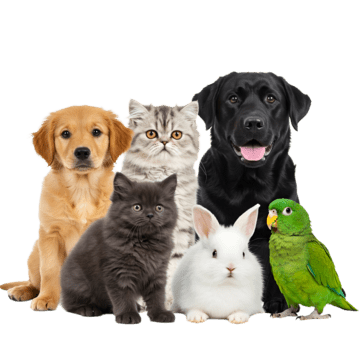

Prevención
La prevención ayuda a detectar problemas antes de que se conviertan en enfermedades graves.
En Gestión Veterinaria SV brindamos atención profesional, responsable y llena de cariño para cuidar la salud de quienes forman parte de tu familia.
Contamos con servicios pensados para mantener saludables y felices a tus mascotas.
Evaluación general para cuidar y controlar la salud de tu mascota.
Agendar consultaAtención prioritaria para situaciones que requieren ayuda veterinaria inmediata.
Ver emergencias
Contamos con espacios cómodos, limpios y seguros para brindar una atención profesional y responsable.
Algunas acciones sencillas pueden ayudar a proteger a tu mascota mientras recibe atención veterinaria.
Limpia suavemente la zona con agua limpia o solución salina y utiliza una gasa limpia para ejercer presión.
No utilices alcohol directamente sobre la herida.Coloca la zona afectada bajo agua fresca durante algunos minutos.
Evita aplicar hielo, cremas o medicamentos.Lleva a tu mascota a un lugar fresco y ofrécele pequeñas cantidades de agua.
No utilices agua extremadamente fría.Retira el producto o alimento que pudo provocar la intoxicación y conserva el envase.
No provoques el vómito sin indicación profesional.Evita mover demasiado a la mascota y colócala sobre una superficie firme.
Si presenta dolor intenso evita manipular la zona.Aplica una compresa fría envuelta en tela para disminuir la inflamación.
Si presenta dificultad para respirar busca ayuda inmediata.Si tu mascota presenta dificultad para respirar, convulsiones, pérdida del conocimiento, sangrado abundante, posible intoxicación, fracturas, vómitos repetidos o un comportamiento muy diferente al habitual, busca atención veterinaria lo antes posible.
Gestión Veterinaria SV nace con el compromiso de proporcionar una atención cercana y profesional para cada mascota.
Nuestro objetivo es brindar tranquilidad a sus propietarios mientras cuidamos la salud y bienestar de sus compañeros.
Próximamente encontrarás alimentos, accesorios y productos seleccionados para el bienestar de tus mascotas.
Productos seleccionados para una alimentación adecuada.
Artículos para entretenimiento y comodidad.
Productos para el cuidado y limpieza de tu mascota.
Información útil sobre prevención, alimentación, vacunas, higiene y bienestar animal.
La prevención ayuda a detectar problemas antes de que se conviertan en enfermedades graves.
Una alimentación adecuada es fundamental para mantener una mascota saludable.
Mantener las vacunas al día ayuda a prevenir múltiples enfermedades.